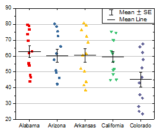

| |
|
|
|
 |
少なくとも1つのY列、あるいは、その部分領域を選択する必要があります。
区間プロット
散布幅
区間プロット: BoxInterval.otp
散布幅: ScatterInterval.otp
両方ともOriginのプログラムフォルダにインストールされています。
区間プロットは、ボックス種類がボックスに設定され、形状はボックスなしに設定され、パーセンタイルタイプで平均の丸いシンボルのチェックボックスのみにチェックが入っているボックスチャートです。
グループ化された区間プロットを作成するには、インデックスデータあるいは素データからグループ化ボックスチャートを作成し、グラフテーマドロップダウンリストからボックス区間プロットを選択します。
散布幅グラフは、次のようにして区間プロットから作成できます。